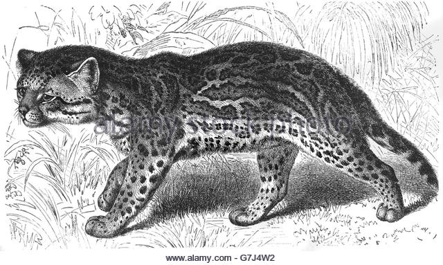
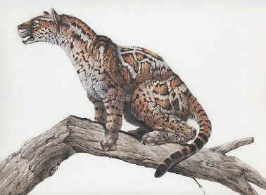
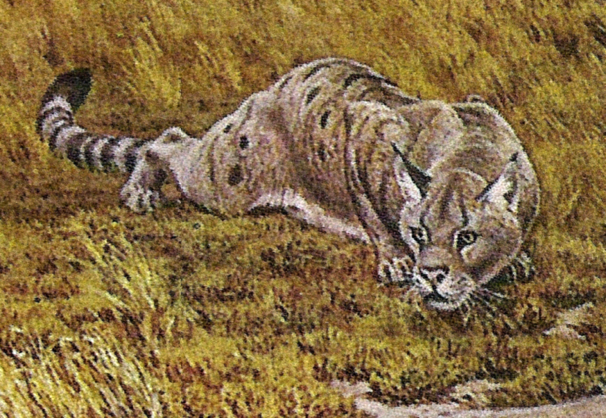
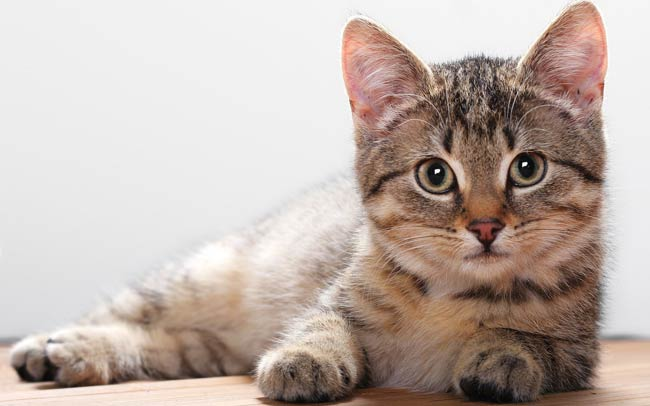

Animals of the Felidae family:
- Miacids

- The miacids were primitive carnivores which lived during the Paleocene and Eocene Epoch about 65—33 million years ago.
Miacids existed for approximately 32 million years.
Miacids are thought to have evolved into today's modern carnivorous mammals of the order Carnivora.
They were small marten-like carnivores with long, little bodies and long tails.
Some species were arboreal while others lived on the ground.
They probably fed on invertebrates, lizards, birds, and smaller mammals like shrews and opossums.
Their teeth and skulls show that the miacids were less developed than the modern carnivores.
They had Carnivora type carnassials but lacked fully ossified auditory bullae (rounded protrusions).
The miacids are divided into two groups: the miacines with a full complement of molars and the viverravines with a reduced number of molars and more specialized carnassials.
- Feloidea

- The Feliformia ("cat-like" carnivores, also Feloidea) are a suborder within the order Carnivora and includes cats (large and small), hyenas, mongooses, civets and related taxa.
The other suborder of Carnivora is Caniformia ("dog-like" carnivores).
One shared characteristic distinguishes Carnivora from all other mammals: the possession of the four carnassial teeth in the front of the jaw.
The separation of Carnivora into the broad groups of feliforms and caniforms is widely accepted, as is the definition of Feliformia and Caniformia as suborders (sometimes superfamilies).
The classification of feliforms as part of the Feliformia suborder or under separate groupings continues to evolve.
- Proailurus

- Proailurus was a prehistoric carnivore that lived in Europe and Asia approximately 25 million years ago in the Late Oligocene and Miocene.
One recent phylogeny places it as a basal member of the Feloidea, the superfamily that includes mongooses, civets, hyenas, and cats; but other studies suggest that it instead was a felid (a true cat).
- Pseudaelurus Genus

- Pseudaelurus is a prehistoric cat that lived in Europe, Asia and North America in the Miocene approximately 20-8 million years ago.
It is an ancestor of today's felines and pantherines as well as the extinct machairodont saber-tooths, and is a successor to Proailurus.
It originated from Eurasia and was the first felid to reach North America, when it entered the continent at about 18.5 m.y ending a 'cat-gap' of 7 million years.
The slender proportions of the animal, together with its short, viverrid-like legs, suggest that it may have been an agile climber of trees.
- Felidae

- Felidae is the biological family of the cats; a member of this family is called a felid.
Felids are the strictest carnivores of the thirteen terrestrial families in the order Carnivora, although the three families of marine mammals comprising the superfamily pinnipedia are as carnivorous as the felids.
The most familiar felid is the domestic cat, which first became associated with humans about 10,000 years ago, but the family includes all other wild cats including the big cats.